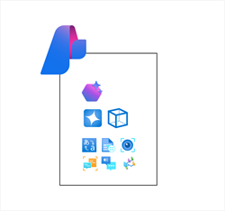
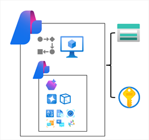

Azure AI Foundry
Azure AI Foundry is a platform for AI development on Microsoft Azure. While you can provision individual Azure AI services and build applications without it, the project organization, resource management, and AI development capabilities of Azure AI Foundry make it the recommended way to build all but the simplest solutions.
- Azure AI Foundry Portal: A web-based visual interface for working with AI projects.
- Azure AI Foundry SDK: Tools to build AI solutions programmatically.
Azure AI Foundry Projects
In Azure AI Foundry, you manage resource connections, data, code, and other elements of your AI solution in projects. There are two main types of project:
Foundry Projects

- Associated with an Azure AI Foundry resource in your Azure subscription.
- Support for Azure AI Foundry models (including OpenAI models), Agent Service, Azure AI services, and tools for evaluation and responsible AI development.
- Best for most common AI development tasks, such as building generative AI chat apps and agents.
- Centralizes resources and capabilities with minimal administrative overhead.
- Manage projects and deployments easily through the Azure AI Foundry portal.
Hub-based Projects

- Associated with an Azure AI hub resource in your Azure subscription.
- Includes an Azure AI Foundry resource, managed compute, support for Prompt Flow development, and connected Azure storage and key vault for secure data.
- Supports advanced AI development scenarios, like Prompt Flow apps or model fine-tuning.
- Accessible from both Azure AI Foundry portal and Azure Machine Learning portal for collaboration between data scientists, ML specialists, and developers.
Tip: Use Foundry projects for most solutions. Use hub-based projects for advanced scenarios or when you need more control over compute, storage, and security.